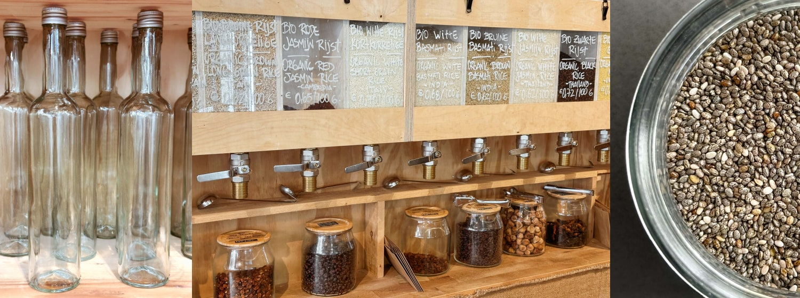

Over het initiatief
Het gebruik van je eigen hebruikbare potjes, bakjes en flessen om op een duurzame manier te winkelen: dat is volgens de winkel Little Plant Pantry in Amsterdam de toekomst. Deze zaak is de eerste zero-waste winkel van de stad, die naast het alleen maar gebruiken van milieuvriendelijke verpakkingen ook nog gezonde en onbewerkte producten verkoopt. Tap zelf zaden of rijst van de zelftap in je eigen potjes, kies voor een duurzame zeep en probeer de allerlekerste zelfgemaakte zoetigheden.
Little Plant Pantry heeft alles wat je nodig hebt voor een duurzame en gezonde leefstijl.
Kies jij ook voor het milieu en je eigen gezondheid?
Openingstijden
woensdag t/m zaterdag van 11:00 tot 19:00 zondag van 11:00 tot 18:00
Little Plant Pantry
Bosboom Toussaintstraat 45-H,
1054 AN Amsterdam
Nederland